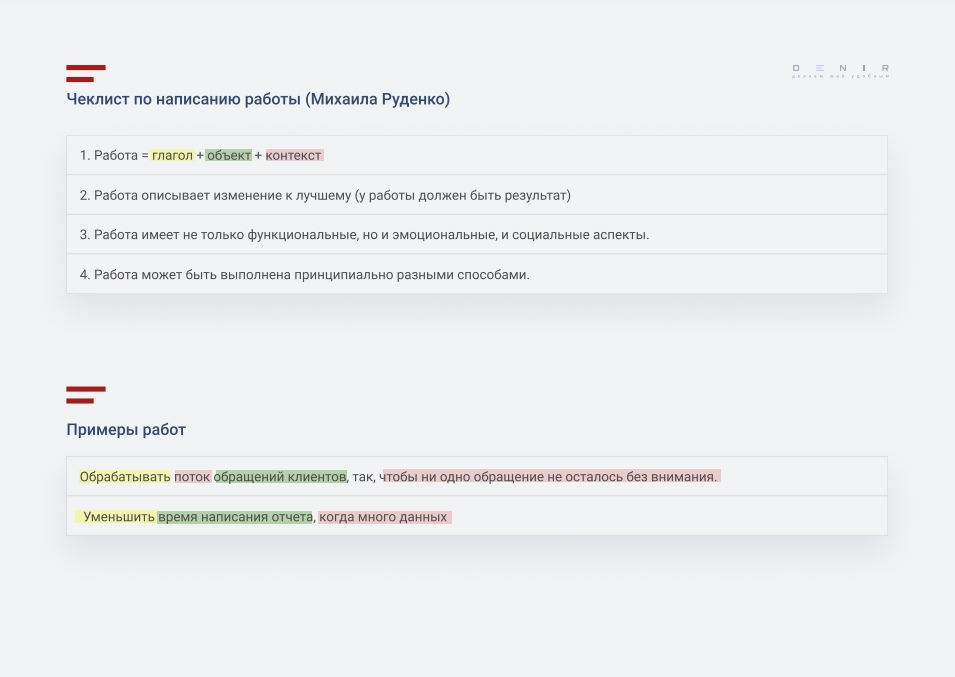
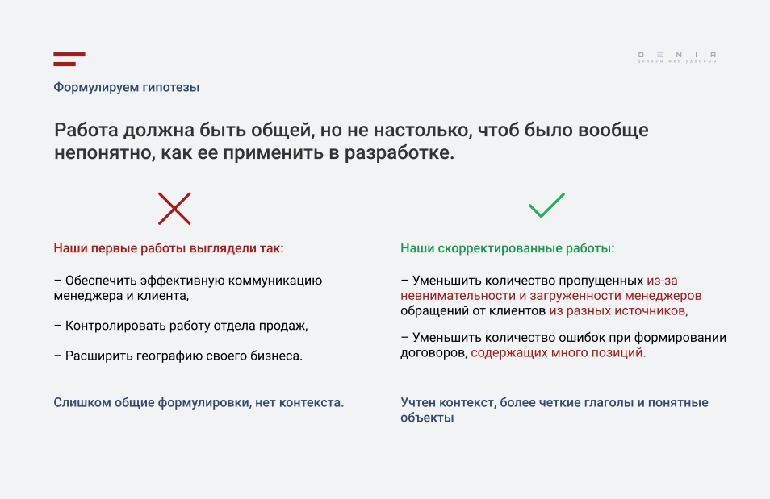
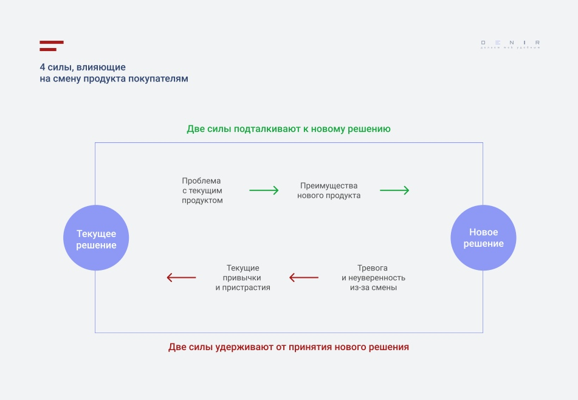
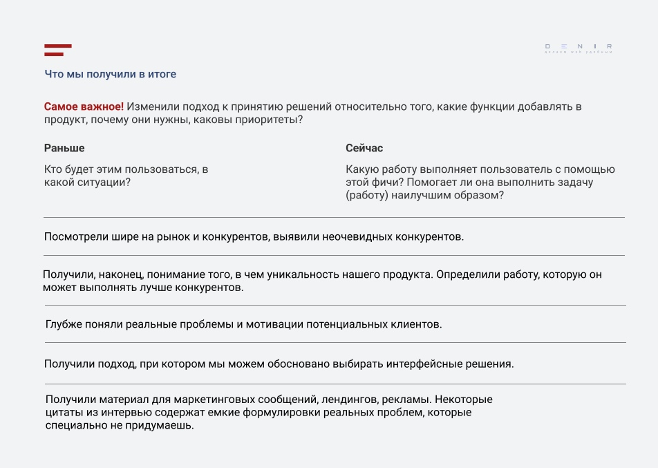

онлайн-конференция для тех, кто делает
удобные цифровые продукты

Войти
Использование фреймворка JTBD при разработке B2B-продукта
Использование фреймворка JTBD при разработке B2B-продукта
Давно собираетесь разобраться, что представляет из себя концепция Jobs To Be Done, почему она работает там, где не работает метод персон, и как использовать подход JTBD при разработке сервиса или сайта? Тогда вам точно надо ознакомиться с докладом Ирины Денисовой «Как применять JTBD на практике. Первый опыт использования фреймворка при разработке B2B-продукта».
Ирина Денисова – UX-специалист, аналитик, основатель веб-студии «Денир». В своём докладе, сделанном на онлайн-конференции UX-Марафон #21| Из рук в руки она поделилась опытом использования фреймворка JTBD при разработке нового B2B-продукта.
Кроме того, В2В-продукт подразумевает обычно два типа стейкхолдеров: собственник, который покупает продукт, и менеджеры, которые непосредственно его используют. А когда речь идёт о стартапе, достоверных данных о возможных пользователях сервиса просто нет.
Метод персон – полезный инструмент, если целевая аудитория определена, и вы не привлекаете нового пользователя. Но он не работает:
По сути, персоны искусственно разбивают аудиторию на части. И, что принципиально важно, они искусственно ограничивают аудиторию вашего продукта, сосредотачиваясь на атрибутах, а не на побудительных мотивах и результатах.
 Таким образом, персоны ничего не могут ничего сказать о мотивации вашей аудитории. Ответ на этот вопрос могут дать только ситуация и контекст.
Таким образом, персоны ничего не могут ничего сказать о мотивации вашей аудитории. Ответ на этот вопрос могут дать только ситуация и контекст.
Ключевая идея Jobs To Be Done: люди «нанимают» продукты для выполнения определённой «работы». Под работой здесь понимается то изменение к лучшему, на которое рассчитывает пользователь.
Работу можно описать формулой:
Работа = глагол + объект + контекст
Обратите внимание на контекст – именно он в методологии JTBD имеет решающее значение! Контекст показывает, в какой именно ситуации будет выполняться эта работа. Также важно, чтобы описание работы включало в себя конкретный результат (изменение к лучшему).
В итоге правильно сформулированная работа будет выглядеть так:
Уменьшить (глагол) время написания отчета (объект), когда много данных (контекст).
Примером правильной формулировки будет «Уменьшить количество пропущенных из-за невнимательности и загруженности менеджеров обращений от клиентов из разных источников». Здесь уже чётко обозначено, когда необходимо уменьшить количество пропущенных заявок: в ситуации, когда менеджеры загружены большим объёмом заявок из разных источников.
Задача опросника – выяснить, почему и в какой ситуации человек непосредственно обратился к продукту.
Важно учитывать всех стейкхолдеров:
Последние хоть и не принимают решения о покупке, но именно они будут непосредственно взаимодействовать с продуктом.
Для этого нужно понять:
Нам важно понять, почему респонденты перешли на этот продукт и почему отказались от предыдущего.
Силы прогресса (по итогам интервью):
Далее, оформляем выявленные работы в виде google-таблицы и добавляем к ним Job Stories.
Когда ____ я хочу _____ чтобы _____ «Когда» фокусируется на ситуации, в которой пользователь принимает решение, «я хочу» – на побудительном мотиве, а «чтобы я мог» – на ожидаемом результате.
Пример: «Когда менеджер утопает в рутине, я хочу обеспечить ему такие условия работы, чтобы он занимался продажами, а не бесконечным заполнением данных в нескольких программах»
Таким образом, имея список «работ», мы по ним формулируем отдельные, точечные ситуации, чтобы понимать, какой функционал наш продукт может предоставить для их выполнения.
Кроме того, использование подхода Jobs To Be Done позволило:
JTBD – это просто? Нет!
Формулировать «работы» и Job stories нужно учиться; нужно привлекать большую часть команды к составлению работ, проводить мозговые штурмы; необходимо чётко понимать цель интервью, правильно составлять вопросы и подбирать респондентов, уметь работать с выводами.
Использовать JTBD полезно? Да!
Подход даёт понимание глубинных мотиваций пользователей, помогает получить данные для разработки и приоритизации фич и определить направление стратегического развития продукта.
***
Посмотреть доклад Ирины Денисовой «Как применять JTBD на практике. Первый опыт использования фреймворка при разработке B2B-продукта» и скачать презентацию к нему вы можете на платформе UX-Марафон . Вы также можете посмотреть выступления всех спикеров онлайн-конференции UX-Марафон #21 | Из рук в руки.
А 25 февраля с 11 до 18 ч. по Москве состоится UX-Марафон #23 | Паттерны дизайн-менеджмента, в рамках которого руководители дизайн- и UX-подразделений расскажут про найм, развитие, стажерские программы, аутстаффинг и интеграцию в команду специалистов, а также про работу в международных компаниях.
Давно собираетесь разобраться, что представляет из себя концепция Jobs To Be Done, почему она работает там, где не работает метод персон, и как использовать подход JTBD при разработке сервиса или сайта? Тогда вам точно надо ознакомиться с докладом Ирины Денисовой «Как применять JTBD на практике. Первый опыт использования фреймворка при разработке B2B-продукта».
Ирина Денисова – UX-специалист, аналитик, основатель веб-студии «Денир». В своём докладе, сделанном на онлайн-конференции UX-Марафон #21| Из рук в руки она поделилась опытом использования фреймворка JTBD при разработке нового B2B-продукта.
Когда персоны не помогают
- Обычно при разработке сервисов и сайтов мы используем метод персон, –рассказала Ирина Денисова. – Но когда мы создали портреты некоторых персонажей, мы поняли, что аудитория у нас очень широкая: разные сферы бизнеса, разные уровни бизнеса (как малый, так и средний), стартапы и устойчиво развивающийся бизнес, мужчины и женщины; большая география, большой возрастной диапазон.Кроме того, В2В-продукт подразумевает обычно два типа стейкхолдеров: собственник, который покупает продукт, и менеджеры, которые непосредственно его используют. А когда речь идёт о стартапе, достоверных данных о возможных пользователях сервиса просто нет.
Метод персон – полезный инструмент, если целевая аудитория определена, и вы не привлекаете нового пользователя. Но он не работает:
- если аудитория слишком большая и сегментированная, у всех разные цели, разные профессии и бэкграунд;
- если аудитория, наоборот, слишком однородная;
- если продукт новый, и вы ещё не знаете свою аудиторию – ведь персоны основываются на данных текущих, а не потенциальных клиентов.
“Продукты не соответствуют людям – они соответствуют проблемам”
По сути, персоны искусственно разбивают аудиторию на части. И, что принципиально важно, они искусственно ограничивают аудиторию вашего продукта, сосредотачиваясь на атрибутах, а не на побудительных мотивах и результатах.
Что такое JTBD?
Jobs To Be Done – это концепция, которая помогает под правильным углом посмотреть на то, как люди принимают решения, как выбирают и в дальнейшем используют продукт, услугу или сервис (а также – почему перестают использовать).Ключевая идея Jobs To Be Done: люди «нанимают» продукты для выполнения определённой «работы». Под работой здесь понимается то изменение к лучшему, на которое рассчитывает пользователь.
Работу можно описать формулой:
Работа = глагол + объект + контекст
Обратите внимание на контекст – именно он в методологии JTBD имеет решающее значение! Контекст показывает, в какой именно ситуации будет выполняться эта работа. Также важно, чтобы описание работы включало в себя конкретный результат (изменение к лучшему).
В итоге правильно сформулированная работа будет выглядеть так:
Уменьшить (глагол) время написания отчета (объект), когда много данных (контекст).

Этапы JTBD-исследования:
- Определяем цель исследования. Что хотим изучить и какой результат получить на выходе.
- Формулируем гипотезы работ на основе своего опыта и опыта клиентов.
- Определяем вопросы для интервью.
- Находим людей с нужными для нас проблемами и проводим интервью.
- Анализируем данные. Выясняем, на какие работы нанимают продукты.
- Приоритизируем работы.
- Формулируем и приоритизируем Job stories.
- Придумываем идеи (решения для продукта, маркетинговые сообщения и проч.) работы.
- Приоритизируем решения.
Формулируем гипотезы
Основная ошибка на этом этапе – слишком общие формулировки. «Обеспечить эффективную коммуникацию менеджера и клиента», «Контролировать работу отдела продаж», «Расширить географию своего бизнеса» – в этих формулировках совершенно отсутствует контекст: в какой именно ситуации предприниматель вдруг решил расширить географию бизнеса или проконтролировать работу отдела продаж.Примером правильной формулировки будет «Уменьшить количество пропущенных из-за невнимательности и загруженности менеджеров обращений от клиентов из разных источников». Здесь уже чётко обозначено, когда необходимо уменьшить количество пропущенных заявок: в ситуации, когда менеджеры загружены большим объёмом заявок из разных источников.

Составляем опросник для проведения интервью
Когда мы определили работы, которые продукт может выполнять, мы составляем опросник для проведения интервью. Как правило, опросник включает следующие блоки вопросов:- Кейсы, истории микро-переключений и микро-найма решений: Когда в последний раз вы пользовались решением (для стартапа – название конкурентного продукта)? А до этого?
- Драйверы, мотивация: Что вас подтолкнуло к тому, чтобы начать пользоваться решением? Почему вы приняли такое решение?
- Использование: Что вы делали, когда начали пользоваться решением (название конкурентного продукта)? Какими функциями решения воспользовались?
- Результат: Чего вы ожидали от решения в результате? Какого эффекта? Что вас в нем привлекало?
- Барьеры: Что мешало получить желаемый результат до того, как вы начали использовать решение? За счет чего вы преодолели эти препятствия? Как решение (название конкурентного продукта) помогло их преодолеть? Какие сложности / препятствия возникли с момента использования решения
- Критерии найма: Почему вы использовали именно это решение? Какие еще были варианты? Решение помогло достичь ожидаемого? Почему? Как вы сравнивали решения друг с другом? Что для вас было важно при выборе?
Задача опросника – выяснить, почему и в какой ситуации человек непосредственно обратился к продукту.
Подбираем респондентов
Для стартапа, когда у нас ещё нет ни продукта, ни клиентов, выбирать респондентов можно среди клиентов конкурентов, пользователей подобных продуктов. Лучше отбирать тех, кто недавно перешел на новый продукт, потому что в их памяти ещё свежи воспоминания, ощущения и эмоции о покупке.Важно учитывать всех стейкхолдеров:
- Предприниматели, использующие конкурентные продукты;
- Менеджеры, непосредственно работающие с похожими продуктами.
Последние хоть и не принимают решения о покупке, но именно они будут непосредственно взаимодействовать с продуктом.
Проводим интервью
Главная цель интервью – узнать, почему пользователь «нанял на работу» ваш продукт или продукт конкурента.Для этого нужно понять:
- желания (то, что клиент хочет получить в будущем);
- катализаторы (то, что повлияло на возникновение желаний);
- ограничения (барьеры на пути к осуществлению желаний);
- набор решений (варианты, которые могут решить задачу).
“Клиенты не покупают продукт – они переходят на него с чего-то другого”
Нам важно понять, почему респонденты перешли на этот продукт и почему отказались от предыдущего.
Анализируем данные. Выявляем «силы прогресса»
На этом этапе мы в первую очередь группируем повторяющие и выявляем уникальные ответы, чтобы определить четыре «силы прогресса», то есть силы, влияющие на смену покупателем продукта.

Силы прогресса (по итогам интервью):
- Отталкивание со стороны происходящего в настоящее время: «Мы не конвертируем пользователей в тех количествах, которые нам бы хотелось иметь»; «Менеджеры устают от рутинных действий в нескольких приложениях».
- Преимущества нового решения: «Если мы внедрим новое решение, которое даст лучшие конверсии, продажи вырастут. Менеджеры смогут сосредоточиться на продажах, а не на рутине».
- Тревога относительно результатов: «Что, если новое решение будет сложно внедрить? Что если оно не будет интегрироваться с другими нашими инструментами? Мы потратим время и деньги, а это не даст желаемого результата».
- Привязанность к тому, что есть в настоящее время: «У нас уже настроены рабочие процессы и средства интеграции, и настраивать их заново будет сложно».
Определяем и приоритизируем реальные работы
Выявляем по итогам интервью реальные работы, например, «Уменьшить количество пропущенных из-за невнимательности и загруженности менеджеров обращений от клиентов из разных источников», «Уменьшить количество ошибок при формировании договоров, содержащих много позиций».Далее, оформляем выявленные работы в виде google-таблицы и добавляем к ним Job Stories.
Формулируем Job stories
Job story – это описание того, как потребитель «нанял» продукт на работу. Job story можно описать формулой:Когда ____ я хочу _____ чтобы _____ «Когда» фокусируется на ситуации, в которой пользователь принимает решение, «я хочу» – на побудительном мотиве, а «чтобы я мог» – на ожидаемом результате.
Пример: «Когда менеджер утопает в рутине, я хочу обеспечить ему такие условия работы, чтобы он занимался продажами, а не бесконечным заполнением данных в нескольких программах»
Таким образом, имея список «работ», мы по ним формулируем отдельные, точечные ситуации, чтобы понимать, какой функционал наш продукт может предоставить для их выполнения.
Выводы. Что дало использование JTBD
Самое важное – мы изменили подход к принятию решений относительно того, какие функции добавлять в продукт, почему они нужны, как расставить приоритеты, – говорит Ирина Денисова. – Если раньше мы спрашивали себя «Кто будет этим пользоваться?», то сейчас формулируем вопрос иначе: «Какую работу выполняет пользователь с помощью этой фичи? Помогает ли она выполнить задачу (работу) наилучшим образом?»Кроме того, использование подхода Jobs To Be Done позволило:
- Посмотреть шире на рынок и конкурентов, выявить неочевидных конкурентов.
- Глубже понять реальные проблемы и мотивации потенциальных клиентов.
- Понять, в чем уникальность продукта, и определить работу, которую он может выполнять лучше конкурентов.
- Обосновано выбрать интерфейсные решения.
- Получить богатый материал для маркетинговых сообщений, лендингов, рекламы.

JTBD – это просто? Нет!
Формулировать «работы» и Job stories нужно учиться; нужно привлекать большую часть команды к составлению работ, проводить мозговые штурмы; необходимо чётко понимать цель интервью, правильно составлять вопросы и подбирать респондентов, уметь работать с выводами.
Использовать JTBD полезно? Да!
Подход даёт понимание глубинных мотиваций пользователей, помогает получить данные для разработки и приоритизации фич и определить направление стратегического развития продукта.
***
Посмотреть доклад Ирины Денисовой «Как применять JTBD на практике. Первый опыт использования фреймворка при разработке B2B-продукта» и скачать презентацию к нему вы можете на платформе UX-Марафон . Вы также можете посмотреть выступления всех спикеров онлайн-конференции UX-Марафон #21 | Из рук в руки.
А 25 февраля с 11 до 18 ч. по Москве состоится UX-Марафон #23 | Паттерны дизайн-менеджмента, в рамках которого руководители дизайн- и UX-подразделений расскажут про найм, развитие, стажерские программы, аутстаффинг и интеграцию в команду специалистов, а также про работу в международных компаниях.